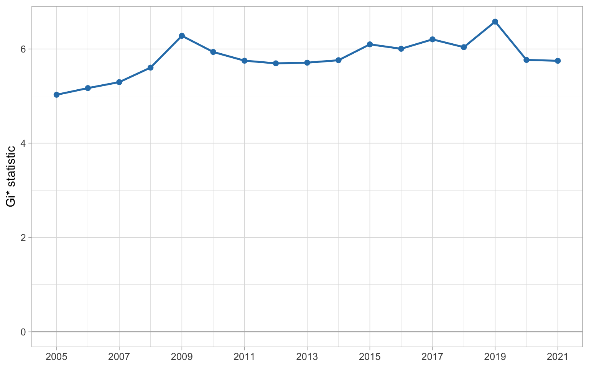
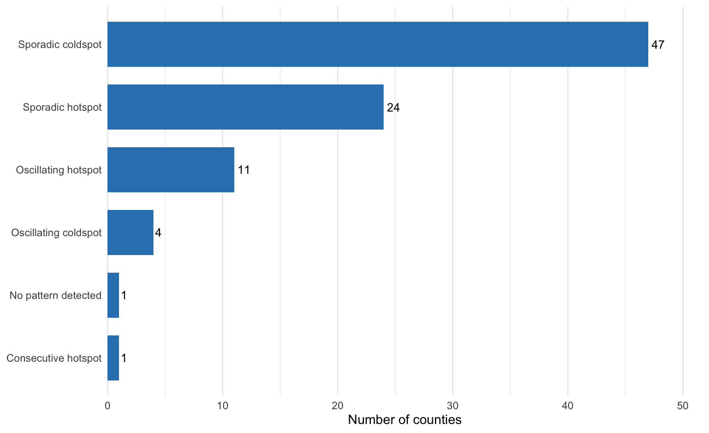
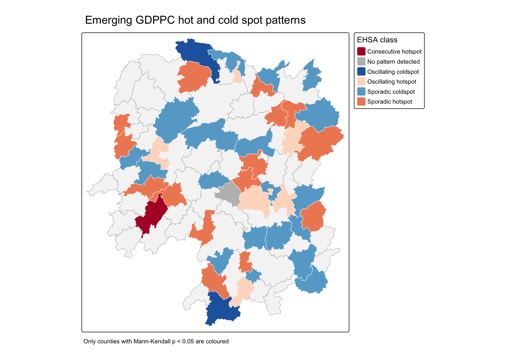

Show the R code
hunan <- st_read(
dsn = file.path(data_path, "geospatial"),
layer = "Hunan",
quiet = TRUE
) %>%
st_transform(crs = 32650)
GDPPC <- read_csv(
file.path(data_path, "aspatial", "Hunan_GDPPC.csv"),
show_col_types = FALSE
)Emerging Hot Spot Analysis
Davin Cuaso
26 September 2026
26 September 2026
This exercise follows the complete In-Class Exercise 5 slide set. Emerging Hot Spot Analysis (EHSA) looks beyond a single map. It identifies where local hot spots and cold spots occur in each year, tests whether those local patterns are changing, and gives each county a final pattern label.
The workflow has four parts:
The two datasets are the files distributed with the course exercise.
| Dataset | Source | Use |
|---|---|---|
| Hunan county boundary | Official In-Class Exercise 5 files | County geometry and spatial relationships |
| Hunan_GDPPC.csv | Official In-Class Exercise 5 file | Annual county GDP per capita from 2005 to 2021 |
st_read() imports the polygons and st_transform() places them in EPSG 32650, a projected coordinate system measured in metres. read_csv() imports the time-series table.
Before continuing, I check that every county has one record in every year and that the names in the attribute table match the names in the boundary file.
data_checks <- tibble(
Check = c(
"County polygons",
"Counties in the time series",
"Years",
"County-year records",
"Unmatched county names",
"Missing GDPPC values"
),
Result = c(
nrow(hunan),
n_distinct(GDPPC$County),
n_distinct(GDPPC$Year),
nrow(GDPPC),
sum(!unique(GDPPC$County) %in% hunan$County),
sum(is.na(GDPPC$GDPPC))
)
)
knitr::kable(data_checks, caption = "Checks on the two input datasets")| Check | Result |
|---|---|
| County polygons | 88 |
| Counties in the time series | 88 |
| Years | 17 |
| County-year records | 1496 |
| Unmatched county names | 0 |
| Missing GDPPC values | 0 |
The checks confirm a balanced dataset: 88 counties observed in each of 17 years, for 1,496 county-year records.
spacetime() links the yearly GDPPC records to the matching county geometry. The county field is the location key and Year is the time key.
| Test | Result |
|---|---|
| Is GDPPC_st a valid space-time cube? | TRUE |
The TRUE result means that the location and time identifiers form a regular cube. This matters because the EHSA functions expect every time slice to use the same locations in the same order.
The slide workflow first activates the cube’s geometry context. st_contiguity() finds counties that touch, while include_self() includes the county itself as required by Gi*. st_inverse_distance() gives closer neighbours more influence. set_nbs() and set_wts() then copy the same spatial structure to every annual slice.
GDPPC_nb <- GDPPC_st %>%
activate("geometry") %>%
mutate(
nb = include_self(st_contiguity(geometry)),
wt = st_inverse_distance(
nb,
geometry,
scale = 1,
alpha = 1
),
.before = 1
) %>%
set_nbs("nb") %>%
set_wts("wt")
weight_check <- GDPPC_nb %>%
activate("geometry") %>%
st_drop_geometry() %>%
summarise(
`Minimum links, including self` = min(lengths(nb)),
`Average links, including self` = round(mean(lengths(nb)), 2),
`Maximum links, including self` = max(lengths(nb))
)
knitr::kable(weight_check, caption = "Neighbour-list check")| Minimum links, including self | Average links, including self | Maximum links, including self |
|---|---|---|
| 2 | 6.09 | 12 |
The order of the records must not be changed after set_nbs() and set_wts(). These list-columns are aligned to the rows of each time slice.
For each year, local_gstar_perm() compares a county and its neighbours with the province-wide pattern. A positive Gi* value points towards a local concentration of high GDPPC values. A negative value points towards a concentration of low values. The permutation procedure evaluates how unusual the observed local statistic is under spatial randomness.
set.seed(1234)
gi_stars <- GDPPC_nb %>%
group_by(Year) %>%
mutate(
gi_star = local_gstar_perm(GDPPC, nb, wt)
) %>%
tidyr::unnest(gi_star)
gi_preview <- gi_stars %>%
ungroup() %>%
select(Year, County, GDPPC, gi_star, p_value, p_folded_sim) %>%
slice_head(n = 8)
knitr::kable(
gi_preview,
digits = 4,
caption = "First eight county-year Gi* results"
)| Year | County | GDPPC | gi_star | p_value | p_folded_sim |
|---|---|---|---|---|---|
| 2005 | Anxiang | 8184 | 0.3981 | 0.7640 | 0.334 |
| 2005 | Hanshou | 6560 | -0.2369 | 0.9566 | 0.424 |
| 2005 | Jinshi | 9956 | 1.0531 | 0.5461 | 0.222 |
| 2005 | Li | 8394 | 0.9657 | 0.3993 | 0.174 |
| 2005 | Linli | 8850 | 1.0475 | 0.3439 | 0.160 |
| 2005 | Shimen | 9244 | 0.2101 | 0.8241 | 0.458 |
| 2005 | Liuyang | 13406 | 3.9145 | 0.0015 | 0.014 |
| 2005 | Ningxiang | 11687 | 1.6065 | 0.3470 | 0.156 |
The Gi* statistic describes the local spatial context of GDPPC. It is not a direct measure of how quickly a county’s own GDPPC grew.
The Mann-Kendall test asks whether a sequence tends to move consistently upward or downward through time.
The slides use Changsha to demonstrate the calculation.
p <- ggplot(cbg, aes(x = Year, y = gi_star)) +
geom_hline(yintercept = 0, colour = "grey70", linewidth = 0.5) +
geom_line(colour = "#2c7fb8", linewidth = 0.9) +
geom_point(colour = "#2c7fb8", size = 2) +
scale_x_continuous(breaks = seq(min(cbg$Year), max(cbg$Year), by = 2)) +
labs(x = NULL, y = "Gi* statistic") +
theme_light(base_size = 12)
p
The same chart can be explored interactively by hovering over each year.
| tau | sl | S | D | varS |
|---|---|---|---|---|
| 0.48529 | 0.00742 | 66 | 136 | 589.3333 |
For Changsha, tau is 0.485 and the p-value, reported as sl, is 0.00742. The positive tau indicates an upward trend in the local Gi* series. Since the p-value is below 0.05, the no-trend hypothesis is rejected.
The same test is repeated for each county. Sorting by the p-value brings the strongest evidence of monotonic change to the top.
county_mk <- gi_stars %>%
group_by(County) %>%
summarise(
mk = list(unclass(Kendall::MannKendall(gi_star))),
.groups = "drop"
) %>%
tidyr::unnest_wider(mk)
emerging <- county_mk %>%
arrange(sl, desc(abs(tau))) %>%
slice_head(n = 10) %>%
transmute(
County,
Tau = tau,
`p-value` = sl,
Direction = if_else(tau > 0, "Upward Gi* trend", "Downward Gi* trend")
)
knitr::kable(
emerging,
digits = 6,
caption = "Ten strongest monotonic Gi* trends"
)| County | Tau | p-value | Direction |
|---|---|---|---|
| Shuangfeng | 0.867647 | 0.000001 | Upward Gi* trend |
| Xiangtan | 0.867647 | 0.000001 | Upward Gi* trend |
| Xiangxiang | 0.867647 | 0.000001 | Upward Gi* trend |
| Chengbu | -0.823529 | 0.000005 | Downward Gi* trend |
| Dongan | -0.823529 | 0.000005 | Downward Gi* trend |
| Wugang | -0.808824 | 0.000007 | Downward Gi* trend |
| Huayuan | -0.794118 | 0.000010 | Downward Gi* trend |
| Shaoshan | 0.794118 | 0.000010 | Upward Gi* trend |
| Liuyang | 0.779412 | 0.000015 | Upward Gi* trend |
| Zhuzhou | 0.764706 | 0.000022 | Upward Gi* trend |
Shuangfeng, Xiangtan, and Xiangxiang have the strongest upward Gi* trends in this run. Chengbu and Dongan are among the strongest downward trends. This table identifies a change in local spatial association, not yet a complete EHSA class. The final classification also considers which individual years were significant hot spots or cold spots.
emerging_hotspot_analysis() combines the annual Gi* histories with the Mann-Kendall trend. Following the slides, one time lag and 99 simulations are used.
class_counts <- ehsa_display %>%
count(classification, sort = TRUE)
ggplot(
class_counts,
aes(x = reorder(classification, n), y = n)
) +
geom_col(fill = "#3182bd", width = 0.72) +
geom_text(aes(label = n), hjust = -0.25, size = 3.8) +
coord_flip(clip = "off") +
scale_y_continuous(expand = expansion(mult = c(0, 0.10))) +
labs(x = NULL, y = "Number of counties") +
theme(panel.grid.major.y = element_blank())
47 of the 88 counties are classified as sporadic cold spots, the largest group. This means low-value clustering appeared in some years, but it did not remain significant for at least 90% of the period. The pattern is intermittent rather than permanent.
The EHSA table is joined to the county polygons by the named county field. In keeping with the slides, only counties with Mann-Kendall p-values below 0.05 are coloured. The legend is placed outside the map so it does not cover any county.
ehsa_colours <- c(
"Consecutive hotspot" = "#b2182b",
"Sporadic hotspot" = "#ef8a62",
"Oscillating hotspot" = "#fddbc7",
"Sporadic coldspot" = "#67a9cf",
"Oscillating coldspot" = "#2166ac",
"No pattern detected" = "#bdbdbd"
)
tm_shape(hunan_ehsa) +
tm_polygons(
fill = "#f5f5f5",
col = "#9e9e9e",
lwd = 0.5
) +
tm_shape(ehsa_sig) +
tm_polygons(
fill = "classification",
fill.scale = tm_scale_categorical(values = ehsa_colours),
fill.legend = tm_legend(
title = "EHSA class",
position = tm_pos_out("right", "center")
),
col = "white",
lwd = 0.6
) +
tm_title("Emerging GDPPC hot and cold spot patterns") +
tm_credits(
"Only counties with Mann-Kendall p < 0.05 are coloured",
position = tm_pos_out("center", "bottom")
)
There are 44 counties with a Mann-Kendall p-value below 0.05. Most significant counties still have sporadic histories. Suining is the only consecutive hot spot in this run, indicating an uninterrupted recent sequence of significant hot spots without a significant hot spot before that final run.
The labels summarise both the timing of significant Gi* results and the trend in their intensity.
The hot spot and cold spot versions use the same timing rules. Their difference is the sign of the underlying local Gi* pattern.
The space-time cube is valid and preserves 88 counties across 17 annual slices. The annual Gi* calculations show that the local pattern is not fixed. Changsha has a significant upward Gi* trend, while the all-county tests reveal both upward and downward trajectories. The final EHSA classification is dominated by sporadic cold spots and sporadic hot spots, so the clearest overall finding is intermittent local clustering rather than province-wide persistence. This conclusion is supported by the sequence of annual local statistics, the Mann-Kendall tests, and the mapped EHSA classes.
---
title: "In-Class Exercise 5"
subtitle: "Emerging Hot Spot Analysis"
author: "Davin Cuaso"
date: 2026-09-26
date-modified: last-modified
format:
html:
code-fold: true
code-summary: "Show the R code"
code-tools: true
toc: true
toc-depth: 3
execute:
echo: true
warning: false
message: false
---
## Overview
This exercise follows the complete [In-Class Exercise 5 slide set](https://isss626-ay2026-27aug.netlify.app/in-class_ex/in-class_ex05/in-class_ex05-ehsa#/title-slide). Emerging Hot Spot Analysis (EHSA) looks beyond a single map. It identifies where local hot spots and cold spots occur in each year, tests whether those local patterns are changing, and gives each county a final pattern label.
The workflow has four parts:
1. organise the county records as a space-time cube;
2. calculate local Getis-Ord Gi* for every county and year;
3. test each county's Gi* series for a monotonic trend with the Mann-Kendall test; and
4. classify the history of each county as a hot spot, cold spot, or no detected pattern.
```{r}
#| label: setup
#| include: false
pacman::p_load(sf, sfdep, tmap, plotly, tidyverse, Kendall)
options(scipen = 999)
theme_set(theme_minimal(base_size = 12))
tmap_mode("plot")
data_path <- "data"
```
## Data and preparation
The two datasets are the files distributed with the course exercise.
| Dataset | Source | Use |
|---|---|---|
| Hunan county boundary | [Official In-Class Exercise 5 files](https://github.com/tskam/ISSS626-AY2026-27Aug/tree/master/In-class_Ex/In-class_Ex05/data/geospatial) | County geometry and spatial relationships |
| Hunan_GDPPC.csv | [Official In-Class Exercise 5 file](https://github.com/tskam/ISSS626-AY2026-27Aug/blob/master/In-class_Ex/In-class_Ex05/data/aspatial/Hunan_GDPPC.csv) | Annual county GDP per capita from 2005 to 2021 |
`st_read()` imports the polygons and `st_transform()` places them in EPSG 32650, a projected coordinate system measured in metres. `read_csv()` imports the time-series table.
```{r}
#| label: import-data
hunan <- st_read(
dsn = file.path(data_path, "geospatial"),
layer = "Hunan",
quiet = TRUE
) %>%
st_transform(crs = 32650)
GDPPC <- read_csv(
file.path(data_path, "aspatial", "Hunan_GDPPC.csv"),
show_col_types = FALSE
)
```
Before continuing, I check that every county has one record in every year and that the names in the attribute table match the names in the boundary file.
```{r}
#| label: data-checks
data_checks <- tibble(
Check = c(
"County polygons",
"Counties in the time series",
"Years",
"County-year records",
"Unmatched county names",
"Missing GDPPC values"
),
Result = c(
nrow(hunan),
n_distinct(GDPPC$County),
n_distinct(GDPPC$Year),
nrow(GDPPC),
sum(!unique(GDPPC$County) %in% hunan$County),
sum(is.na(GDPPC$GDPPC))
)
)
knitr::kable(data_checks, caption = "Checks on the two input datasets")
stopifnot(
nrow(hunan) == 88,
n_distinct(GDPPC$County) == 88,
n_distinct(GDPPC$Year) == 17,
nrow(GDPPC) == 88 * 17,
all(unique(GDPPC$County) %in% hunan$County),
!anyNA(GDPPC$GDPPC)
)
```
The checks confirm a balanced dataset: 88 counties observed in each of 17 years, for 1,496 county-year records.
## Creating the space-time cube
`spacetime()` links the yearly GDPPC records to the matching county geometry. The county field is the location key and Year is the time key.
```{r}
#| label: create-cube
GDPPC_st <- spacetime(
GDPPC,
hunan,
.loc_col = "County",
.time_col = "Year"
)
cube_check <- tibble(
Test = "Is GDPPC_st a valid space-time cube?",
Result = is_spacetime_cube(GDPPC_st)
)
knitr::kable(cube_check, caption = "Space-time cube validation")
```
The `TRUE` result means that the location and time identifiers form a regular cube. This matters because the EHSA functions expect every time slice to use the same locations in the same order.
## Computing local Gi*
### Deriving spatial weights
The slide workflow first activates the cube's geometry context. `st_contiguity()` finds counties that touch, while `include_self()` includes the county itself as required by Gi*. `st_inverse_distance()` gives closer neighbours more influence. `set_nbs()` and `set_wts()` then copy the same spatial structure to every annual slice.
```{r}
#| label: spatial-weights
GDPPC_nb <- GDPPC_st %>%
activate("geometry") %>%
mutate(
nb = include_self(st_contiguity(geometry)),
wt = st_inverse_distance(
nb,
geometry,
scale = 1,
alpha = 1
),
.before = 1
) %>%
set_nbs("nb") %>%
set_wts("wt")
weight_check <- GDPPC_nb %>%
activate("geometry") %>%
st_drop_geometry() %>%
summarise(
`Minimum links, including self` = min(lengths(nb)),
`Average links, including self` = round(mean(lengths(nb)), 2),
`Maximum links, including self` = max(lengths(nb))
)
knitr::kable(weight_check, caption = "Neighbour-list check")
```
The order of the records must not be changed after `set_nbs()` and `set_wts()`. These list-columns are aligned to the rows of each time slice.
### Calculating Gi* for each year
For each year, `local_gstar_perm()` compares a county and its neighbours with the province-wide pattern. A positive Gi* value points towards a local concentration of high GDPPC values. A negative value points towards a concentration of low values. The permutation procedure evaluates how unusual the observed local statistic is under spatial randomness.
```{r}
#| label: local-gstar
set.seed(1234)
gi_stars <- GDPPC_nb %>%
group_by(Year) %>%
mutate(
gi_star = local_gstar_perm(GDPPC, nb, wt)
) %>%
tidyr::unnest(gi_star)
gi_preview <- gi_stars %>%
ungroup() %>%
select(Year, County, GDPPC, gi_star, p_value, p_folded_sim) %>%
slice_head(n = 8)
knitr::kable(
gi_preview,
digits = 4,
caption = "First eight county-year Gi* results"
)
```
The Gi* statistic describes the local spatial context of GDPPC. It is not a direct measure of how quickly a county's own GDPPC grew.
## Mann-Kendall trend test
The Mann-Kendall test asks whether a sequence tends to move consistently upward or downward through time.
- **Null hypothesis:** there is no monotonic trend in the county's Gi* series.
- **Alternative hypothesis:** a monotonic trend is present.
- **Tau:** values near 1 indicate an upward trend, while values near -1 indicate a downward trend.
- **p-value:** a value below 0.05 provides evidence against the null hypothesis.
### Changsha example
The slides use Changsha to demonstrate the calculation.
```{r}
#| label: changsha-series
cbg <- gi_stars %>%
ungroup() %>%
filter(County == "Changsha") %>%
select(County, Year, gi_star)
```
```{r}
#| label: changsha-plot
#| fig-cap: "Local Gi* series for Changsha"
#| fig-width: 8
#| fig-height: 5
p <- ggplot(cbg, aes(x = Year, y = gi_star)) +
geom_hline(yintercept = 0, colour = "grey70", linewidth = 0.5) +
geom_line(colour = "#2c7fb8", linewidth = 0.9) +
geom_point(colour = "#2c7fb8", size = 2) +
scale_x_continuous(breaks = seq(min(cbg$Year), max(cbg$Year), by = 2)) +
labs(x = NULL, y = "Gi* statistic") +
theme_light(base_size = 12)
p
```
The same chart can be explored interactively by hovering over each year.
```{r}
#| label: changsha-interactive
ggplotly(p)
```
```{r}
#| label: changsha-mann-kendall
changsha_mk <- cbg %>%
summarise(
mk = list(unclass(Kendall::MannKendall(gi_star)))
) %>%
tidyr::unnest_wider(mk)
knitr::kable(
changsha_mk,
digits = 5,
caption = "Mann-Kendall test for Changsha's Gi* series"
)
```
For Changsha, tau is `r round(changsha_mk$tau, 3)` and the p-value, reported as `sl`, is `r format.pval(changsha_mk$sl, digits = 3)`. The positive tau indicates an upward trend in the local Gi* series. Since the p-value is below 0.05, the no-trend hypothesis is rejected.
### Testing all counties
The same test is repeated for each county. Sorting by the p-value brings the strongest evidence of monotonic change to the top.
```{r}
#| label: all-county-mann-kendall
county_mk <- gi_stars %>%
group_by(County) %>%
summarise(
mk = list(unclass(Kendall::MannKendall(gi_star))),
.groups = "drop"
) %>%
tidyr::unnest_wider(mk)
emerging <- county_mk %>%
arrange(sl, desc(abs(tau))) %>%
slice_head(n = 10) %>%
transmute(
County,
Tau = tau,
`p-value` = sl,
Direction = if_else(tau > 0, "Upward Gi* trend", "Downward Gi* trend")
)
knitr::kable(
emerging,
digits = 6,
caption = "Ten strongest monotonic Gi* trends"
)
```
Shuangfeng, Xiangtan, and Xiangxiang have the strongest upward Gi* trends in this run. Chengbu and Dongan are among the strongest downward trends. This table identifies a change in local spatial association, not yet a complete EHSA class. The final classification also considers which individual years were significant hot spots or cold spots.
## Performing Emerging Hot Spot Analysis
`emerging_hotspot_analysis()` combines the annual Gi* histories with the Mann-Kendall trend. Following the slides, one time lag and 99 simulations are used.
```{r}
#| label: run-ehsa
set.seed(1234)
ehsa <- emerging_hotspot_analysis(
x = GDPPC_st,
.var = "GDPPC",
k = 1,
nsim = 99
)
ehsa_display <- ehsa %>%
mutate(
classification = classification %>%
str_replace("^oscilating", "oscillating") %>%
str_to_sentence()
)
```
### Distribution of EHSA classes
```{r}
#| label: ehsa-class-chart
#| fig-cap: "Distribution of EHSA classes across Hunan counties"
#| fig-width: 9
#| fig-height: 5.5
class_counts <- ehsa_display %>%
count(classification, sort = TRUE)
ggplot(
class_counts,
aes(x = reorder(classification, n), y = n)
) +
geom_col(fill = "#3182bd", width = 0.72) +
geom_text(aes(label = n), hjust = -0.25, size = 3.8) +
coord_flip(clip = "off") +
scale_y_continuous(expand = expansion(mult = c(0, 0.10))) +
labs(x = NULL, y = "Number of counties") +
theme(panel.grid.major.y = element_blank())
```
`r class_counts$n[class_counts$classification == "Sporadic coldspot"]` of the 88 counties are classified as sporadic cold spots, the largest group. This means low-value clustering appeared in some years, but it did not remain significant for at least 90% of the period. The pattern is intermittent rather than permanent.
### Mapping significant EHSA results
The EHSA table is joined to the county polygons by the named county field. In keeping with the slides, only counties with Mann-Kendall p-values below 0.05 are coloured. The legend is placed outside the map so it does not cover any county.
```{r}
#| label: join-ehsa
hunan_ehsa <- hunan %>%
left_join(
ehsa_display,
by = join_by(County == location)
)
ehsa_sig <- hunan_ehsa %>%
filter(p_value < 0.05)
stopifnot(
nrow(hunan_ehsa) == nrow(hunan),
nrow(ehsa_sig) == sum(ehsa_display$p_value < 0.05)
)
```
```{r}
#| label: ehsa-map
#| fig-cap: "Significant emerging hot spot and cold spot histories in Hunan"
#| fig-width: 10
#| fig-height: 7
ehsa_colours <- c(
"Consecutive hotspot" = "#b2182b",
"Sporadic hotspot" = "#ef8a62",
"Oscillating hotspot" = "#fddbc7",
"Sporadic coldspot" = "#67a9cf",
"Oscillating coldspot" = "#2166ac",
"No pattern detected" = "#bdbdbd"
)
tm_shape(hunan_ehsa) +
tm_polygons(
fill = "#f5f5f5",
col = "#9e9e9e",
lwd = 0.5
) +
tm_shape(ehsa_sig) +
tm_polygons(
fill = "classification",
fill.scale = tm_scale_categorical(values = ehsa_colours),
fill.legend = tm_legend(
title = "EHSA class",
position = tm_pos_out("right", "center")
),
col = "white",
lwd = 0.6
) +
tm_title("Emerging GDPPC hot and cold spot patterns") +
tm_credits(
"Only counties with Mann-Kendall p < 0.05 are coloured",
position = tm_pos_out("center", "bottom")
)
```
There are `r nrow(ehsa_sig)` counties with a Mann-Kendall p-value below 0.05. Most significant counties still have sporadic histories. Suining is the only consecutive hot spot in this run, indicating an uninterrupted recent sequence of significant hot spots without a significant hot spot before that final run.
### Reading the class labels
The labels summarise both the timing of significant Gi* results and the trend in their intensity.
- **New:** significant only in the final period, with no earlier significant result of the same type.
- **Consecutive:** an uninterrupted run at the end of the series, covering fewer than 90% of all periods.
- **Intensifying or diminishing:** significant in at least 90% of periods, including the last period, with a significant upward or downward intensity trend.
- **Persistent:** significant in at least 90% of periods without a clear upward or downward intensity trend.
- **Sporadic:** significant in some, but fewer than 90%, of the periods and never significant as the opposite type.
- **Oscillating:** significant in the final period but was also significant as the opposite type in an earlier period.
- **Historical:** significant in at least 90% of periods, but not significant in the final period.
- **No pattern detected:** none of the defined histories applies.
The hot spot and cold spot versions use the same timing rules. Their difference is the sign of the underlying local Gi* pattern.
## Assumptions and limitations
- County boundaries and neighbour relationships are treated as constant from 2005 to 2021.
- Inverse-distance weights assume that nearby contiguous counties exert more spatial influence than farther contiguous counties.
- The Mann-Kendall test detects a monotonic direction. It does not require a straight-line trend, but it does assume that the ordering of the observations is meaningful.
- GDPPC is analysed as supplied. Without a price adjustment, changes in the raw values may include inflation. The Gi* trend should therefore be read as a change in relative local clustering, not as a pure measure of real economic growth.
- With 99 simulations, the permutation p-values have fairly coarse resolution. More simulations would provide more stable tail probabilities at the cost of longer computation.
- Statistical significance does not explain why a county became a hot spot or cold spot. Policy, industry, population, and measurement changes would need separate investigation.
## Conclusion
The space-time cube is valid and preserves 88 counties across 17 annual slices. The annual Gi* calculations show that the local pattern is not fixed. Changsha has a significant upward Gi* trend, while the all-county tests reveal both upward and downward trajectories. The final EHSA classification is dominated by sporadic cold spots and sporadic hot spots, so the clearest overall finding is intermittent local clustering rather than province-wide persistence. This conclusion is supported by the sequence of annual local statistics, the Mann-Kendall tests, and the mapped EHSA classes.